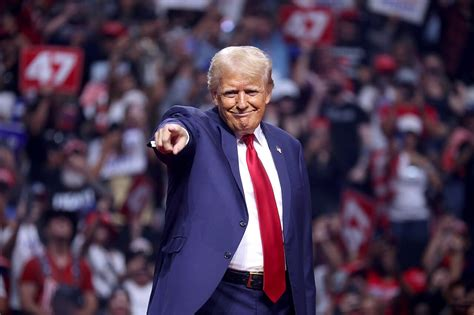

L'ACTU
De vice présidente à présidente, c’est ce que Kamala Harris espère des votes du 5 novembre. Les élections américaines 2024 divisent profondément le peuple états-unien. Entre républicain et démocrate, dans le duel Harris/Trump, rien n'est encore joué.
“Kamala Harris deviendra la première femme présidente des États-Unis, ouvrant une grande fissure dans le plafond de verre, voire le brisant complètement”, c’est ce qu’assure Allan Litchman, historien spécialiste des élections présidentielles. Pourtant, l’ex-président des Etats-Unis a vu sa côte de popularité bondir. Selon les derniers sondages, Kamala réunit 49% des intentions de votes, lorsque son adversaire en recueille 48%. La course à la Maison Blanche se joue au coude à coude quand, il y a quelques semaines, Harris était déclarée gagnante.
La vice-présidente, essayant de plaire à tout le monde, perd ses électeurs qui se sentent de moins en moins concernés par les politiques qu’elle mène. Son programme, initialement démocrate, s'est endurci. Issu d’immigration, Harris compte durcir sa politique migratoire, notamment s’agissant des immigrants illégaux. Elle souhaite aussi continuer à investir dans la barrière physique qui sépare les Etats Unis et le Mexique. "Crazy Kamala" comme aime la surnommer Trump, Kamala Harris perd des votes en tentant de s'identifier peuple et en désacralisant la place de président.
Quand Donald Trump part à l’assaut des minorités, Harris, consciente des tensions politiques croissantes, s'emploie à séduire les électeurs républicains modérés. Sa stratégie passe par des apparitions publiques avec des figures emblématiques du parti, comme Liz Cheney. Cette approche soulève des interrogations sur ses priorités.
Bien qu'elle puisse s'appuyer sur ses origines et ses racines multiculturelles pour porter ses luttes, Harris semble choisir de se confronter directement à l'électorat de Trump. Ce choix peut être perçu comme un risque calculé, visant à capter l'attention d'une base électorale plus large, mais cela l'éloigne également de la défense des causes qui lui tiennent à cœur. En cherchant à naviguer entre les différents courants politiques, elle doit faire face à un dilemme : comment concilier ses engagements envers les minorités tout en tentant de rallier des voix au sein d'un électorat potentiellement hostile.
La campagne de Trump est bien ancrée et basée sur l’idiocratie, en rabaissant et méprisant son adversaire. Kamala, étant jusque-là hermétique à ses attaques, s’est récemment prise à son jeu et a éluder des questions posées en discréditant l’ex-président des Etats-Unis. Depuis, le surnom “Kamabla” lui colle à la peau.